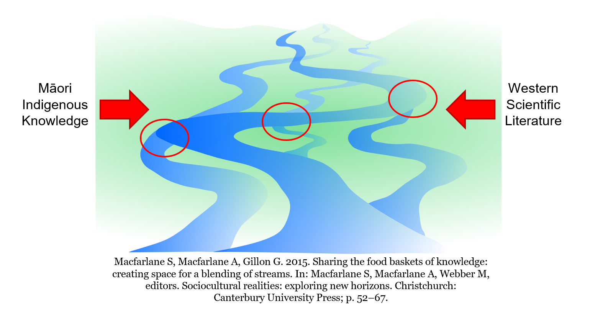
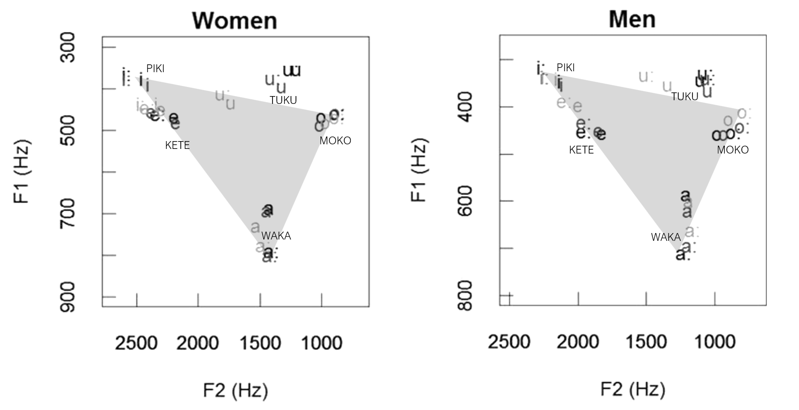
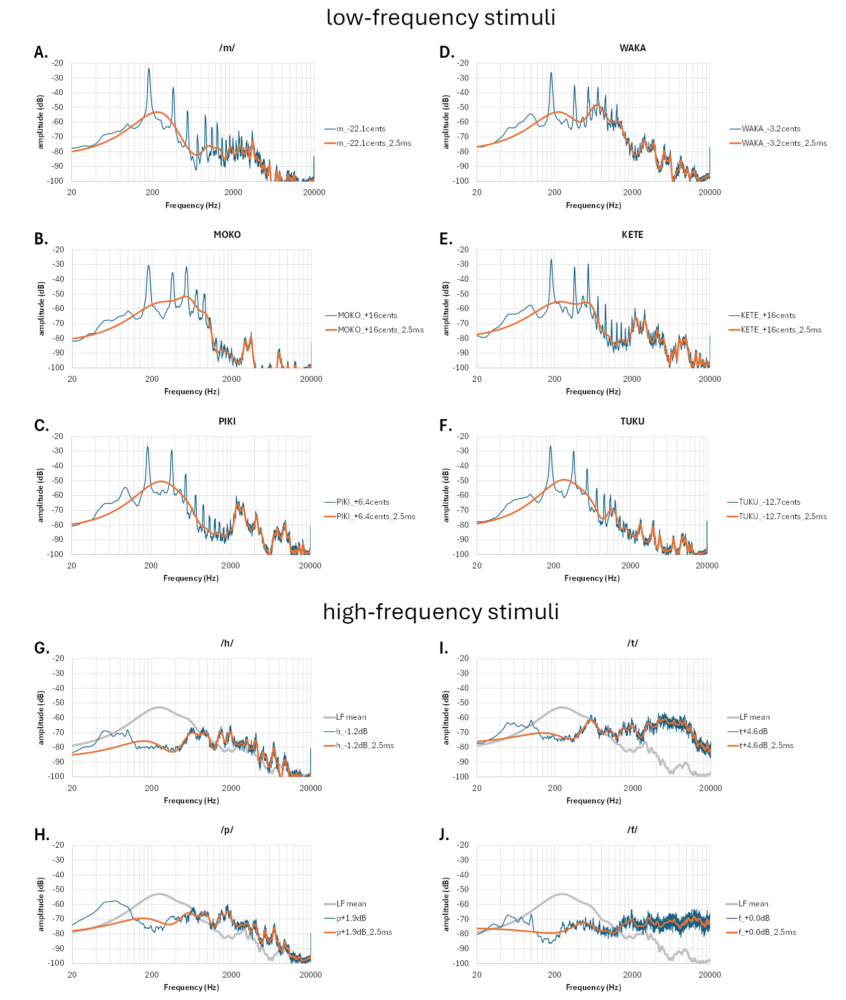
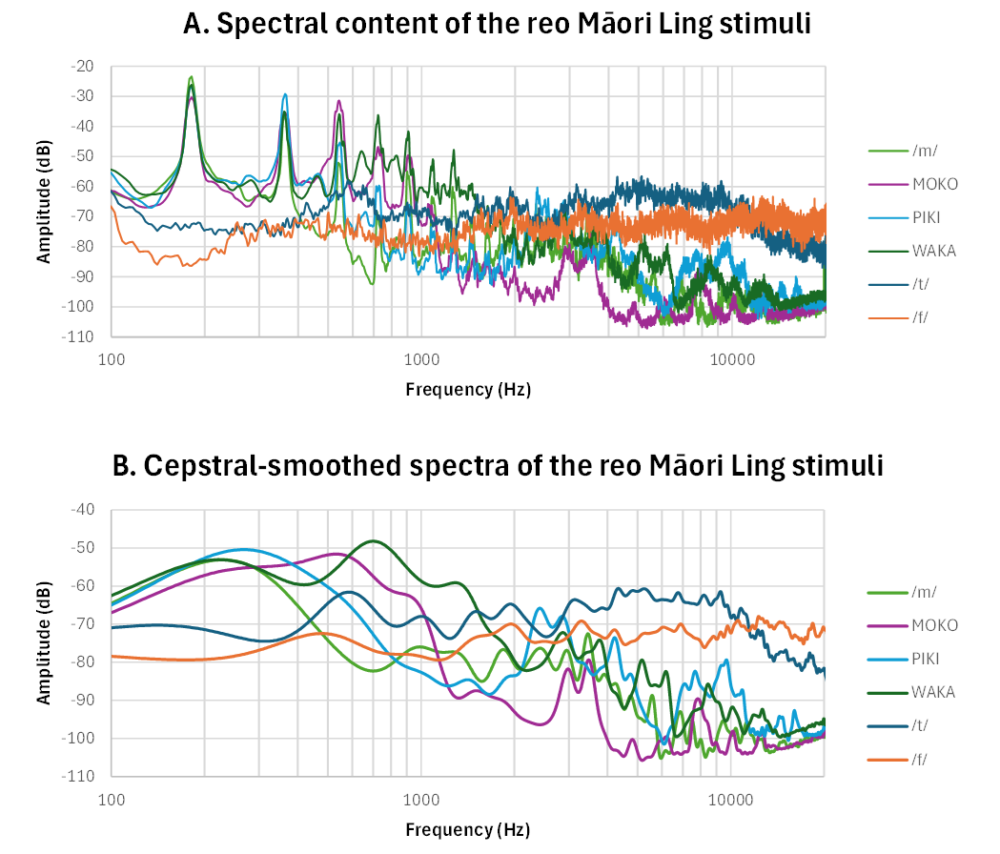

Abstract
›
The Ling Sound Test (Ling, 1976; 1989) is widely used internationally to verify access to key speech frequencies through hearing aids or cochlear implants. However, the standard English Ling sounds do not align with the phonemic system of te reo Māori — the Indigenous language of Māori people of Aotearoa New Zealand. In particular, the high-frequency phonemes /s/ and /ʃ/ do not occur in te reo Māori, resulting in reduced linguistic and cultural validity for Māori tamariki (children) undergoing hearing assessment.
To address this gap, we developed Te Whakamātautau Hoka, a culturally responsive adaptation of the Ling test for use with Māori-speaking children. Following a He Awa Whiria / Braided Rivers approach, the test was co-designed with Indigenous communities, audiologists, teachers, and parents through iterative consultation. Six phonemes spanning the speech spectrum were selected — /m/, /o/ (MOKO), /i/ (PIKI), /a/ (WAKA), /f/, and /t/ — and recorded by a fluent speaker. A responsive mobile/web application was developed supporting calibrated delivery, offline playback, and te reo Māori and New Zealand English modes. Early professional feedback indicates strong engagement and enthusiasm for a linguistically and culturally authentic hearing assessment tool.
Introduction
Background & Motivation
›
- The Ling Sound Test (Ling, 1976; 1989) is used internationally to verify access to key speech frequencies through hearing aids or cochlear implants
- Six English speech sounds (/m/, /u/, /a/, /i/, /ʃ/, /s/) span the speech spectrum
- In Aotearoa New Zealand and Australia, routinely used in educational and clinical settings, often with /ɔ/ added or substituted for /u/ (Agung et al., 2005; McDonnell, 2014; Rees, 2019)
- These English Ling sounds do not align with the phonemic system of te reo Māori — the Indigenous language of Māori people of Aotearoa New Zealand
- Te reo Māori is undergoing active revitalisation, but existing hearing assessments often require Māori-speaking children to respond to non-Māori phonology
- The high-frequency phonemes /s/ and /ʃ/ do not occur in te reo Māori, reducing linguistic and cultural validity for Māori tamariki (children)
- To address this gap, we developed Te Whakamātautau Hoka, a culturally responsive adaptation co-designed with Indigenous communities, audiologists, teachers, and parents
Aims & Objectives
Research Goals
›
- Develop a linguistically robust and culturally responsive te reo Māori adaptation of the Ling sound test
- Select Māori phonemes spanning the speech spectrum
- Co-design with professionals and Māori stakeholders
- Create calibrated mobile/web delivery
- Evaluate usability and acoustic characteristics
Development Process
He Awa Whiria — Braided Rivers Approach
›
- This research followed a He Awa Whiria / Braided Rivers approach (Macfarlane et al., 2015), braiding together indigenous Māori knowledge (mātauranga Māori) and Western scientific knowledge traditions

- Wānanga — co-design with communities and experts
- Phoneme selection
- Audio recording & editing
- App development
- Acoustic calibration
- Feedback from audiologists, teachers, and parents
Phoneme Selection
Selecting the Six Stimuli
›
- Phonological analysis and acoustic measurements guided the selection of six representative Māori sounds for recording by a fluent speaker

- /m/ — voiced bilabial nasal
- /o/ — MOKO — short mid-back rounded vowel
- /i/ — PIKI — short close-front unrounded vowel
- /a/ — WAKA — short open-central vowel
- /f/ — voiceless labiodental fricative
- /t/ — voiceless alveolar stop
- Additional stimuli were recorded for TUKU (short close-back rounded vowel) and KETE (short close-mid unrounded vowel) for comparison
- Variable pronunciation of the Māori "wh" digraph (commonly /f/, but also /w/ or /h/) prompted exploration of alternative high-frequency phonemes: /p/ (voiceless bilabial stop) and /h/ (voiceless glottal fricative)
- Only /f/ and /t/ had sufficient high-frequency acoustic energy to warrant inclusion in the final stimulus set
- The transient nature of /t/ required development of a repeated presentation delivery mode (e.g. ×3, ×5)
Acoustic Analyses
Spectral Characteristics of the Stimuli
›
- LF phonemes were pitch-adjusted (maximum 22 cents) to achieve a consistent fundamental frequency of 182 Hz
- Amplitudes of the recorded LF stimuli were adjusted to achieve a constant momentary k-weighted loudness (LUFS)
- Amplitudes of the /t/ and /f/ phonemes were adjusted to preserve their relative levels with respect to vowels in a sample of continuous speech


App Development
Mobile & Web Delivery Platform
›
- A responsive mobile/web application was developed to support consistent and accessible delivery of the reo Māori Ling sound test across educational and clinical settings
- Responsive design for phones, tablets, and desktop devices
- Preloaded audio enabled low-latency offline playback
- Calibration tools supported dB A level adjustment using a sound-level meter or second device (e.g. iOS NIOSH SLM app)
- Te reo Māori and New Zealand English modes support use across Aotearoa
- Early professional feedback indicates strong engagement and enthusiasm for a linguistically and culturally authentic tool
Conclusion
Te Whakamātautau Hoka — Summary
›
- Te Whakamātautau Hoka — the reo Māori Ling sound test — supports equitable and culturally meaningful hearing assessment in a revitalising Indigenous language
- Demonstrates how linguistically and culturally grounded design can enhance engagement, accessibility, and clinical relevance in paediatric audiology
References
›
- Agung K, Purdy S, & Kitamura C, 2005. The Ling sound test revisited. Australian and New Zealand Journal of Audiology, 27, 33–41. doi:10.1375/audi.2005.27.1.33
- Duffield C, 2026. Development of the Reo Māori Ling Sound Test. MAud thesis. doi:10.26021/16395
- King J, Harlow R, Watson C, Keegan P, & Maclagan M, 2009. Changing pronunciation of the Māori language: Implications for revitalization. In J. Reyhner & L. Lockard (Eds.), Indigenous Language Revitalization.
- Ling D, 1976. Speech and the hearing-impaired child: Theory and practice. Alexander Graham Bell Association for the Deaf, Inc.
- Ling D, 1989. Foundations of spoken language for hearing-impaired children. Alexander Graham Bell Association for the Deaf Inc.
- Macfarlane S, Macfarlane A, & Gillon G, 2015. Sharing the food baskets of knowledge: Creating space for a blending of streams. In A. H. Macfarlane, S. Macfarlane, & M. Webber (Eds.), Sociocultural realities: Exploring new horizons (pp. 52–68). Canterbury University Press.
- McDonnell S, 2014. The Ling sound test: What is its relevance in the New Zealand classroom? Kairaranga, 15, 48–55. doi:10.54322/kairaranga.v15i2.250
- Rees B, 2019. Use of the Ling 7-Sound Test to monitor hearing in young children with Down syndrome. MAud thesis. doi:10.26021/8258
- Watson CI, Maclagan MA, King J, Harlow R, & Keegan PJ, 2016. Sound change in Māori and the influence of New Zealand English. Journal of the International Phonetic Association, 46(2), 185–218. doi:10.1017/S0025100316000025